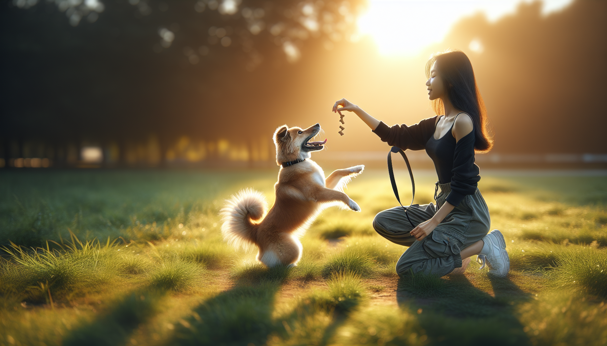

A reliable recall, or teaching your dog to come when called, is one of the most important skills your dog will ever learn. It is not just a convenient trick for the backyard or dog park. It is a life-saving behavior that can protect your dog from traffic, wildlife, unsafe situations, and everyday distractions. Whether you are raising a new puppy, helping a rescue dog settle in, or improving training with an adult dog, recall should be at the top of your priority list.
The good news is that strong recall is absolutely teachable. The less good news is that it does not happen by accident. Dogs do not come “every time” because they are stubborn or dominant. They come consistently when returning to you has been practiced, reinforced, and made more rewarding than whatever else is happening in the environment. In other words, reliable recall is built through smart training, not force.
In this guide, you will learn how to teach your dog to come when called using positive reinforcement, strategic practice, and clear steps that work in real life. We will also cover common mistakes, what to do with distracted dogs, and how to set up success for puppies, rescue dogs, and adult learners.
Many dog owners focus first on sit, down, or leash walking, and those skills are useful. But recall has a unique role because it directly affects safety and freedom. A dog that comes when called can enjoy more off-leash opportunities, more trust, and more flexibility in daily life.
Reliable recall helps with:
For rescue adopters, recall training also helps create security and communication in a new home. For puppy parents, it lays the groundwork for a lifetime of good habits. And for adult dogs, it can be rebuilt even if they have a history of ignoring cues.
Before you begin, decide exactly what you want your recall cue to mean. Ideally, “come” should predict something great every single time. Your dog should think, “Running to my person is always worth it.” That mindset is what creates speed and enthusiasm.
You can use a cue like “come,” “here,” or a whistle. Some trainers prefer a special recall word that has not been overused. If your dog already hears “come” all day and often ignores it, choosing a fresh cue like “here” may help.
Your recall cue should mean:
At first, avoid using your recall cue for anything unpleasant. If you call your dog and then immediately trim nails, end play, give medicine, or leave the park every time, your dog will quickly learn that coming to you predicts disappointment. Sometimes call your dog, reward, and then let them go back to playing. That teaches them that coming when called does not always end the fun.
The best place to begin recall training is in a quiet, low-distraction environment. For most dogs, that means indoors. Start where success is easy so your dog can build understanding and confidence.
Here is a simple step-by-step approach:
Repeat this over several short sessions. Keep sessions brief, fun, and successful. Five minutes is plenty. The goal is not drilling. The goal is creating a strong emotional response to the cue.
You can also make recall a game. Have family members stand in different rooms and take turns calling the dog, rewarding each successful response. Puppies especially love this, and it helps them learn that running to people is exciting.
If your dog does not respond, do not repeat the cue over and over. That teaches them the first cue is optional. Instead, make the situation easier. Move closer, reduce distractions, and use better rewards.
Once your dog is consistently responding indoors, gradually increase the challenge. Dog training works best when difficulty rises in small, manageable steps. Trainers often call this the three Ds: distance, duration, and distraction. For recall, distraction is usually the hardest part.
Move your training to:
Use a long line, typically 15 to 30 feet, for safety. A long line lets your dog experience freedom while preventing them from rehearsing ignoring you. This is especially important for rescue dogs, adolescent dogs, and high-drive breeds.
When practicing outside:
Think of recall like a muscle. Every successful repetition strengthens it. Every ignored cue weakens it. Your job is to set up as many successful repetitions as possible.
One reason many dogs fail to come when called is simple: the reward is not valuable enough. Dry kibble might work in the kitchen, but it often cannot compete with smells, other dogs, or open space. If you want a powerful recall, use powerful reinforcement.
Great recall rewards include:
Reward placement matters too. When your dog gets to you, deliver the reward right at your body so they learn to come all the way in, not just close enough. You can also grab their collar gently, feed a treat, and then release. This helps prevent a dog from learning to dart away at the last second.
For puppies and rescue dogs, keep recall outcomes overwhelmingly positive. These dogs are still forming associations with you, the home, and the world around them. Positive reinforcement builds trust and motivation much faster than scolding or punishment.
Even devoted dog owners accidentally undermine recall. The good news is that these mistakes are easy to fix once you recognize them.
Another common issue is only practicing recall when you need it. Instead, practice daily in low-pressure moments. The more often your dog hears the cue and wins, the stronger the habit becomes.
If your dog ignores the recall cue, resist the urge to get louder or angry. Instead, think like a trainer and ask why the response failed. Usually the answer is one of three things: the environment was too distracting, the dog did not fully understand the cue, or the reward history is not strong enough yet.
Try this reset plan:
For rescue dogs, remember that adjustment takes time. Many newly adopted dogs are still decompressing, learning your voice, and understanding your routines. Be patient, predictable, and generous with reinforcement.
For adolescent dogs, setbacks are normal. Teen dogs often become more interested in the environment and less responsive than they were as young puppies. This does not mean training failed. It means you need to return to basics and practice through the developmental stage.
Teaching your dog to come when called every time is one of the best investments you can make in your relationship and your dog’s safety. The key is to make recall clear, rewarding, and carefully practiced in stages. Start indoors, use excellent rewards, add distractions gradually, and avoid poisoning the cue with punishment or disappointment.
No dog is perfect in every situation, and even well-trained dogs need ongoing practice. But with consistency, positive reinforcement, and smart management, you can build a recall that is fast, happy, and dependable in everyday life.
If you want more step-by-step help with recall, leash manners, puppy training, and behavior problem solving, get our full Dog Training eBook series — new titles added weekly.